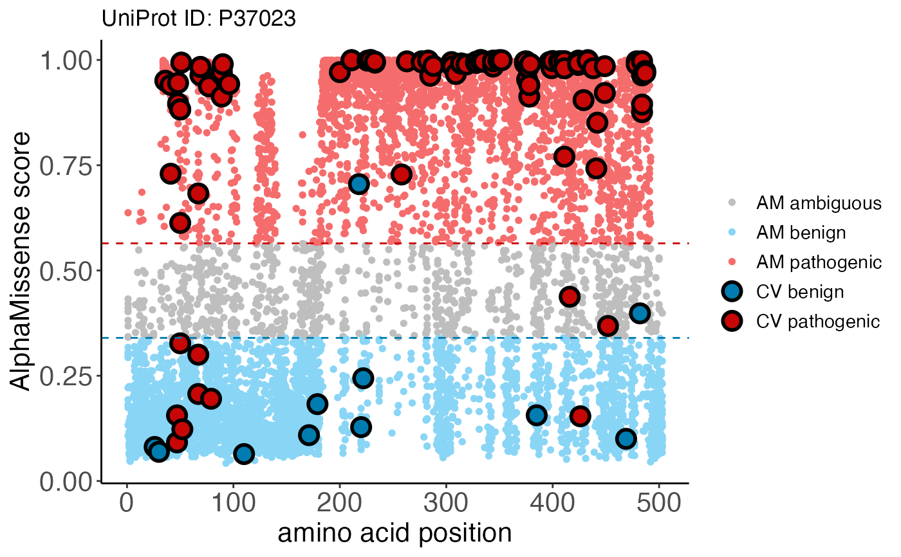

clinvar_data() loads ClinVar information from the
supplemental table of the AlphaMissense
[2023]
paper.
clinvar_plot() integrates ClinVar classifications
with AlphaMissense predicted scores derived from
am_data("aa_substitutions") and returns a ggplot object for
visualization.
Usage
clinvar_data(record = ALPHAMISSENSE_RECORD, bfc = BiocFileCache())
clinvar_plot(uniprotId, alphamissense_table, clinvar_table)Arguments
- record
character(1) Zenodo record for the AlphaMissense data resources.
- bfc
an object returned by
BiocFileCache()representing the location of the AlphaMissenseR database. The default is the 'global' BiocFileCache.- uniprotId
character()a valid UniProt accession identifier.- alphamissense_table
a table containing AlphaMissense predictions for protein variants. By default, the table is derived from
am_data("aa_substitution"). Alternatively, a user-definedtibble::tbl_dfordata.framecan be supplied.- clinvar_table
a table containing ClinVar information. By default, the table is derived from the supplemental data of the AlphaMissense paper. Alternatively, a user-defined
tibble::tbl_dfordata.framecan be supplied.
Value
clinvar_data() returns a tbl with 82872 rows and 5 variables:
variant_id: ClinVar variant identifier.transcript_id: Ensembl transcript identifier.protein_variant: UniProt accession:protein variant identifier.AlphaMissense: AlphaMissense pathogenicity score.label: Binary ClinVar class, either "benign" or "pathogenic".
clinvar_plot() returns a ggplot object which overlays
ClinVar classifications onto AlphaMissense predicted
scores. Blue, gray, and red colors represent pathogenicity
classifications for "likely benign", "ambiguous", or
"likely pathogenic", respectively. Large, bolded points are
ClinVar variants colored according to their clinical
classification, while smaller points in the background are
AlphaMissense predictions.
Details
For clinvar_plot(), alphamissense_table columns must include:
uniprot_id: UniProt accession identifier.protein_variant: variant identifier string, with protein position in the middle, and the reference and mutant amino acid residues to the left and right of the position, respectively.am_class: AlphaMissense classification of either "benign", "ambiguous", or "pathogenic".am_pathogenicity: AlphaMissense predicted score.
clinvar_table columns must include:
uniprot_id: UniProt accession identifier, matchingalphamissense_table.protein_variant: variant identifier string, matchingalphamissense_tableformat.cv_class: binary ClinVar classification of "benign" or "pathogenic".
References
Cheng et al., Accurate proteome-wide missense variant effect prediction with AlphaMissense. Science 381, eadg7492. DOI:10.1126/science.adg7492.
Examples
clinvar_data()
#> # Source: table<clinvar> [?? x 5]
#> # Database: DuckDB v1.1.0 [root@Darwin 23.6.0:R 4.5.0//Users/mtmorgan/Library/Caches/org.R-project.R/R/BiocFileCache/121787f1dafbc_121787f1dafbc]
#> variant_id transcript_id protein_variant AlphaMissense label
#> <chr> <chr> <chr> <dbl> <fct>
#> 1 chr1_925969_C_T_hg38 ENST00000342066.8 Q96NU1:P10S 0.967 benign
#> 2 chr1_930165_G_A_hg38 ENST00000342066.8 Q96NU1:R28Q 0.663 benign
#> 3 chr1_930204_G_A_hg38 ENST00000342066.8 Q96NU1:R41Q 0.0866 benign
#> 4 chr1_930245_G_A_hg38 ENST00000342066.8 Q96NU1:D55N 0.134 benign
#> 5 chr1_930248_G_A_hg38 ENST00000342066.8 Q96NU1:G56S 0.100 benign
#> 6 chr1_930282_G_A_hg38 ENST00000342066.8 Q96NU1:R67Q 0.0635 benign
#> 7 chr1_930285_G_A_hg38 ENST00000342066.8 Q96NU1:R68Q 0.0629 benign
#> 8 chr1_930314_C_T_hg38 ENST00000342066.8 Q96NU1:H78Y 0.110 benign
#> 9 chr1_930320_C_T_hg38 ENST00000342066.8 Q96NU1:R80C 0.0918 benign
#> 10 chr1_931058_G_A_hg38 ENST00000342066.8 Q96NU1:V92M 0.196 benign
#> # ℹ more rows
alphamissense_table <- am_data("aa_substitutions")
clinvar_plot(
uniprotId = "P37023",
alphamissense_table = alphamissense_table
)
#> * [12:02:05][info] 'clinvar_table' not provided, using default ClinVar dataset in AlphaMissenseR package
